Next: References
We consider the problem of acoustic scattering as described by the free-space, time-harmonic scalar wave equation given by
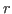
is a point in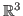
,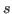
is the source term, and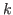
is the wavenumber. Our formulation is based on potential theory. First we write as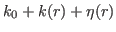
, where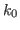
is a constant value,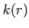
is a known function of space, and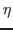
is the unknown medium perturbation. Given the sources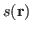
and detectors outside the perturbation we solve (1) for . We observe the total field only at designated points outside of where detectors which measure the field may exist. We use multiple events, where we consider independent activations or different sources at different times. This problem is common in many areas of science and engineering such as seismic imaging, subsurface imaging, impedance tomography, non-destructive evaluation, and diffuse optical tomography.
We describe an algorithm for for efficiently solving the inverse
scattering problem for the low-frequency time-harmonic scalar wave
equation with multi-point illumination.
The following approach is based on the FaIMS algorithm described by
Chaillat and Biros in [1].
First, compress the number of incident fields (computed by solving the
variable coefficient Helmholtz equation with point sources) using a
randomized QR factorization to compute a low rank approximation.
By compressing the incident fields, we greatly reduce the problem size
and by using a randomized QR factorization we can compute an
approximation to within a specified tolerance, ensuring that there is not
significant information loss.
After compressing the incident fields, we can compute the medium
perturbation by solving
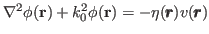 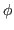
We have extended the results of [1] in a few different ways. In the original paper the background medium was assumed to have a constant wavenumber except for the perturbation, i.e. was zero, but here we allow for variable background medium. We expand the types of scatterers allowed; the original paper allowed only point scatterers while we allow for multiple continuous scattering objects. We also make use use of the iterated Born approximation in our solver. Finally, we achieve superior scalability to the approached referenced in the FaIMS paper. We rapidly evaluate the integral for the forward scatterer using the pvfmm library which implements a fast multipole method for volume potentials in parallel. Furthermore, we use PETSc for in our implementation for its fast iterative solvers.